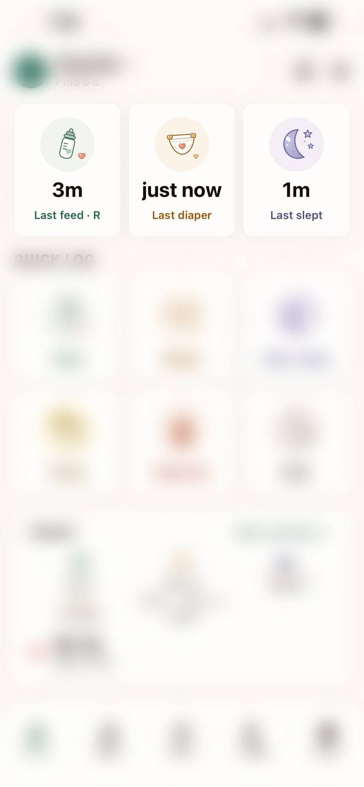

The nights are long.
The app shouldn't be.
A calm place to keep track of a new baby — and of the person recovering from birth. No account to create, no cloud to sync, no ads, no analytics. Everything you log stays on your phone.
Free on the App Store for iPhone and iPad.
What you can log
The home screen answers the only question that matters at 3 a.m. — how long since the last feed, sleep and change — before you've fully opened your eyes.
The screen you'll actually look at
Time since the last feed, change and sleep — before you've fully opened your eyes.

Built for one hand, in the dark
Everything a newborn tracker should do, plus the half nobody builds.
Feeds, naps and changes
A breast timer with left/right and pause. Bottles in ounces or milliliters. Solids, diapers, pumping, medicine and notes — with time-since-last on the home screen and daily totals behind it.
Sleep that learns your baby
A wake-window predictor that adjusts to your own logs rather than a generic chart, plus a white, pink and brown noise machine generated on the device that keeps playing when the screen locks.
Growth, vaccines, milestones
WHO and CDC percentile charts, sex-specific and corrected for prematurity up to 24 months. A CDC-schedule vaccination tracker, and the CDC milestone checklists presented without the anxiety.
For mom, not just baby
Recovery guidance by delivery type and week. The AWHONN and CDC post-birth warning signs with tap-to-call. A private mood check-in that points toward support rather than handing back a score.
Not a promise. An architecture.
Most apps say they respect your privacy. BabyChart makes no network requests at all — there is no server, no account system, no analytics and no advertising code anywhere in it.
That isn't a policy we could quietly change in an update. It's enforced by an automated test that fails the build if anyone ever adds a network call.
- No
fetch, no HTTP client, no push tokens - No analytics, crash reporting or advertising libraries
- No over-the-air update channel
What leaves your phone
NothingEverything you record lives in the app's private storage on your device. The only copy that ever exists elsewhere is a backup file you export yourself, to a place you choose.
Someone should be tracking you, too
Newborn apps tend to stop at the baby. BabyChart includes recovery guidance organized by delivery type and week, a self-care log, and the post-birth warning signs every new parent is handed on a leaflet and then loses.
The mood check-in is based on the published EPDS. It never returns a score as a verdict — it points toward support, and it stays entirely on your device.
Recovery, week by week
Vaginal birth and caesarean recovery are different. The guidance knows which you had.
The AWHONN and CDC post-birth list, reachable in two taps instead of lost in a drawer.
Based on the EPDS (Cox et al., 1987). Routes to support, never a diagnosis.
More than one, and born early
Add as many children as you need; each one's logs, growth, vaccines and milestones stay separate. Enter a due date alongside the birth date and the app uses corrected age for growth charts, milestones and sleep guidance until 24 months.
There's a dark mode designed for a dark room, and a backup file you control — export it, keep it, restore it on a new phone.
Corrected age
For a baby born at 32 weeks, measuring against a term chart isn't just wrong — it's frightening. Corrected age is applied wherever it matters, automatically.
Cited, not invented
Every piece of reference material in the app is bundled on-device with a source citation. None of it is generated, summarised by a model, or paraphrased from a blog.
"Learn the Signs. Act Early." milestone checklists (2022), growth charts from 2 years, the childhood immunisation schedule, and the Hear Her maternal warning-signs campaign.
Growth standards for 0–2 years, sex-specific.
Infant feeding and safe sleep guidance; the post-birth warning signs list.
The Edinburgh Postnatal Depression Scale (Cox et al., 1987) and AASM sleep-duration guidance.
Not medical advice. BabyChart is for tracking and general information only. The medicine log records what you gave and when — it never recommends a dose. Always consult your pediatrician, OB or midwife. In an emergency, call your local emergency number.
Questions parents ask
Do I need to create an account?
No. There's no sign-up, no email, no password. Open the app, add a child, and start logging. There's nothing to create because there's no server for an account to live on.
If there's no cloud, what happens when I get a new phone?
Export a backup file from the old phone and restore it on the new one — you choose where the file goes: Files, AirDrop, email, a cloud drive of your own. Your device's own iCloud or Google backup will also carry the data if you have it enabled.
This is the honest trade-off of a local-first app. Do the export before you wipe the old phone.
My baby was premature. Does it handle that?
Yes. Enter the due date alongside the birth date and the app applies corrected age to growth charts, milestones and sleep guidance until 24 months.
Can I track more than one child?
Yes — as many as you need, each with separate logs, growth, vaccines and milestones, and quick switching between them.
Why does it need notification permission?
For reminders and for live feed and sleep timers on your lock screen. Notifications are generated entirely on the device — there's no push service, so nothing can be sent to you from outside.
Is the mood check-in a diagnosis?
No. It's a screening prompt based on the published EPDS, and it deliberately doesn't hand back a score as a verdict. If it points toward support, please follow up with a real person — your provider, or a helpline. In the United States you can call or text 988 at any time.
BabyChart is on the App Store
Free to download, free to log, and nothing you record ever leaves your phone. Logging never locks — a subscription opens the worked-out half of the app.